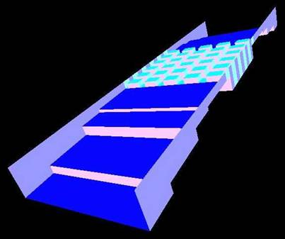
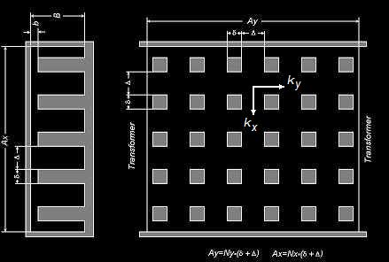
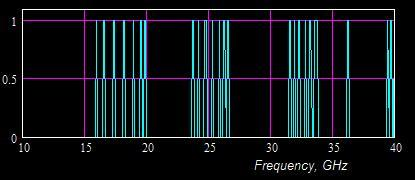
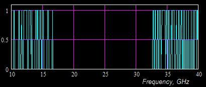
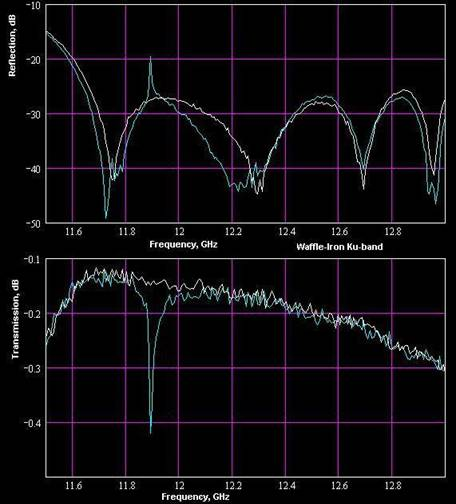
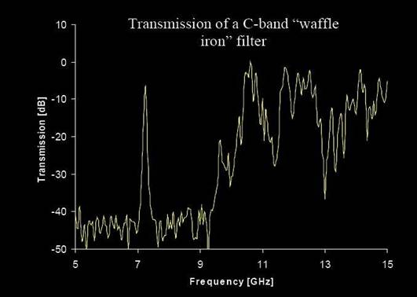

Waffle-Iron
Harmonic (Low-Pass) Filters
Where the spurious comes from
By
Rousslan A. Goulouev
|
 |
Figure 1: Internal
surface of a waffle-iron filter
Summary
The
waffle-iron filter was firstly introduced by Cohn [1] in 1962. The conventional
structure was represented as uniform two-dimensional periodic structure of
rectangular teeth put into a waveguide and coupled with interface by E-plane
stepped transformers. A design method based on representing the waffle iron
structure as uniform waveguide was presented in [2]. Limited power handling is
considered as major disadvantage of the waffle-iron filter of Cohn’s design. In
addition to power handling limitation spurious spikes in pass-band, roll-off
and stop-band are reported [3]. Those spikes are caused by excitation of
waveguide modes of higher order, which are not taken into account in known
design methods. Later modifications applied by Levy [4] and Sharp [5] do not
considerably overcome those disadvantages.
Principles of
Operation

Figure 2: Top and side
view of classic waffle-iron structure
The
waffle-iron filter is based on two-dimensional slow-wave delay structure of
rectangular teeth mounted on wide walls of rectangular waveguide and matched
with external waveguide line by quarter-wave stepped transformers. Propagation
in “waffle-iron” section can be described by two orthogonal wave numbers kx (transverse) and ky (longitudinal) as functions of wave
number in space (k). Then cut-off frequency of quasi-TEnm mode
corresponding to “waffle-iron” waveguide (waveguide of cross-section shown on
Figure 2 (left)) can be expressed
kcTEnm = m-th root(kx(k)-nπ/Ax). (1)
Here kx is propagation number corresponding to
one-dimensional periodic corrugated structure (vane-type, or corrugated plane)
forming waffle-iron on x-direction. It is known that transmission through the
corrugated plane structure turns to zero and “the first cutoff occurs
approximately when the stub becomes resonant, i.e. k(B-b)=π/2” [6].
Simple analysis shows that quasi-TEno-mode with n
< ½ Ax/(B-b) has
lower cut-off frequency than prototype TEno-mode of rectangular
waveguide and quasi-TEno-mode with n > ½ Ax/(B-b) has higher cut-off frequency than
prototype TEno-mode of rectangular waveguide. This is basic idea of
operation of waffle-iron filter is based on moving the spurious pass-bands of
equivalent corrugated filter (same filter without longitudinal slots) up or down
from the design stop-band. If the spurious moves higher than stop-band
(condition n > ½ Ax/(B-b)), it is OK. If the spurious moves
lower than stop-band (condition n < ½ Ax/(B-b)), it seams to be also OK because the
spurious modes cannot be theoretically excited (prototype TEno-mode is
evanescent in transformers and interface waveguides [1,2,5]).
Closed Modes
Assuming the
spurious modes TEno (n>1) being shorted at transformer apertures
we can apply similar approach for evaluation of spectrum of their resonances and
obtain the following expression
kxynm = (kxn2+kym2)
½ , (2)
Where kxynm
is plurality of wave
numbers corresponding to modes with transverse and longitudinal resonant
numbers n and m, and
kxn = roots(kx(k)-nπ/Ax), (3)
kym= roots(ky(k)-mπ/Ay).
The resonances
can be computed for two-dimensional periodic waffle-iron structure using simple
mode-matching procedure presented in [8].
Corrugated Filter
In case of
periodic corrugated structure, when kxn = nπ/Ax, spurious resonances are grouped into
separate frequency bands representing TEno-modes (n=2,3,4,..) (see Figure 3) well known as
“spurious responses” [4] (see more in [7]).

Figure 3: Layout of
spurious resonances on frequency axis for a Ku-band corrugated filter
Waffle-Iron Filter
In case of
two-dimensional periodic waffle-iron structure, spurious resonances are grouped
into two frequency bands representing lower quasi-TEno-modes (n=2,3,4,..,Nc) and higher quasi-TEno-modes
(n=Nc, Nc+1,…) ( Nc=int{½ Ax/(B-b)} ) separated by blank zone with no
resonances (see Figure 4). It can be
noted that longitudinal slots have not removed the spurious shown on Figure 3
but moved it left or right. It can be also noted that the lower spurious
resonances have moved to the pass-band and roll-off zones of the filter.

Figure 4: Layout of
spurious resonances on frequency axis for a Ku-band waffle-iron filter (the
same corrugated structure longitudinally slotted)
Spikes in Pass-Band
In accordance
with basic theory of waffle-iron filters [1,2,6] the resonances should not be
excited because of two reasons;
Practically
any of the spurious resonances can be easy excited by coupling with the
dominant mode (TE10) caused by practical asymmetry (tolerances,
offset, shift, etc.). The resonances having odd n-index greater than 1 (3,5,…) can be directly coupled with TE10-mode
and excited if even the filter is built ideally. If excited, the spurious
resonances can cause spikes in frequency response similar to shown on Figure
5.

Figure 5: Spike of
spurious quasi-TE40-mode in pass-band of a Ku-band waffle-iron
filter caused by tolerances
Spikes in Stop-Band
Spurious
responses can appear in design stop-band, if cut-off frequency of at least one
spurious mode (1) resides there. The amplitude and bandwidth of such spurious
will depend on asymmetry of structure or existence of the prototype mode in the
interface waveguides. The nature of the spurious is similar to spurious
pass-bands of a corrugated filter, which are images of the pass-band of the
dominant mode (see [7] for more information). Therefore it is theoretically
impossible to design a spurious-less waffle-iron filter. However it might be
possible to move the spurious out of spec bands.

Figure 6: Spike of
spurious mode (likely quasi-TE20) in pass-band of a C-band
waffle-iron filter [3]
Peak Power Handling
As the
stop-bandwidth (see Figure 4) directly depends on “slowness” of waffle-iron
structure in two directions, the gap (b for asymmetric filters and 2b for vertically symmetric filters) must
be very small in order to move the spectrum of spurious resonances (see Figure
4) below the design stop-band and/or reduce margin between pass-band and
stop-band. For example for the Ku-band waffle-iron filter (see Figure 4)
designed for pass-band 13.5 – 14.5 GHz and stop-band 17 – 33 GHz, the gap
dimension cannot be chosen greater than 0.03’’ (b<0.018λ or 2b<0.036λ). Besides to small “voltage gap”,
smallness and sharpness of teeth also increase the maximum value of strength of
electrical field in several times relatively to equivalent plane waveguide
having the same gap dimension. Therefore the waffle-iron filter cannot be used
in multi-carrier space applications, because of very low peak power handling
capacity.
Production Sensitivity
As the gap
dimension is small, it can be practically very difficult to keep its uniformity
over the waffle-iron structure. Even small tolerance +/-0.001’’ randomly
applied to teeth can significantly worsen VSWR (return loss) for Ku-band and
Ka-band filters, as it is large relatively to tiny dimensions. In addition to
degrading pass-band so usual for all type of filters, the random tolerances can
cause spurious spikes in pass-band (see Figure 5) by exciting “high Q”
resonances of closed odd modes (see Figure 4). The resonances can be also
caused by other nature of asymmetry (for example twisting, offsetting,
deformation, temperature expansion, mechanical tension, etc.)
Design Methods
The known
design methods based on synthesis of equivalent periodic waveguide [2] or
distributed circuit [4] taking into account only the dominant mode.
Nevertheless, analysis of spurious modes is much more sophisticated than in
case of corrugated filters. The analysis must include:
Fixing Spurious
Problems
It is
theoretically impossible to fix spurious spikes and responses (Figure 6) in
stop-band of waffle-iron filter without significant modifications of basic
structure of the filter. However, the spurious can be reduced or even
eliminated by changing the system outside the filter and reducing presence of
the spurious modes. For example, removing “asymmetric” components (H-plane
bends, twists, etc.) and making the system symmetric eliminates excitation of
odd waveguide modes causing the spurious spikes. However, the spikes of
pass-band (Figure 5) might be reduced by using more accurate manufacturing
methods. Sometimes, the spurious caused by quasi-TE20-mode can be fixed by two
offset tuning screws. Although the fixing methods listed above do not seem to
be much useful - there is no a good way to fix a bad thing, except creating
a good thing.
Possible Design Replacement
A bi-corrugated [10,12] or inhomogeneous stepped-Impedance corrugated filter [11] can be a better
design solution because of not having the in-band spurious problems
and being more predictable for the out-of-band spurs. The design process is also straight forward
and simple, if using right software (see WR-Connect page)
References [1] S.B. Cohn,
US Patent 3,046,503, July 1962 [2] C.G.
Matthaei, L. Young, and E. M. T. Jones, “Microwave Filters, Impedance Matching
Networks, and Coupling Structures”, New York, McGraw-Hill, 1964. [3] J.
Rodgers, Y. Carmel, P. O’Shea “Electromagnetic Effects on Integrated Circuits
and Systems at Microwave Frequencies”, Institute for Research in Electronics
and Applied Physics, University of Maryland, 2001 [4] Ralph
Levy, “Aperiodic Tapered Corrugated Waveguide Filter”, US Patent 3,597,710,
Nov. 28, 1969. [5] E.D. Sharp
“A High-Power Wide-Band Waffle-Iron Filter”, IEEE, Trans. Microwave Theory and
Tech., March, 1963, pp. [2] R. Levy “Tapered Corrugated Waveguide
Low-Pass Filter”, IEEE Trans. Microwave Theory Tech., MTT-21, August 1973, pp.
526-532. [6] R.E.
Collin “Foundation for microwave engineering”, McGRAW-Hill, 1966 [7] R. A.
Goulouev “Corrugated Low-Pass Filter Design
Workshop”, Online Resources, www.goulouev.com,
2002. [8] R. A.
Goulouev “Waffle-iron Filter. Analysis of Spurious.”,
Online Resources, www.goulouev.com, 2004. [9] R. A.
Goulouev “Harmonic Rejection Test Procedure”, Online
Resources, www.goulouev.com, 2001 [10] W. Hauth, R. Keller, U. Rosenberg,
"The Corrugated-Waveguide Band-Pass Filter - A New Type of Waveguide Filter", 18th EUMC Proc., Stockholm, 1988, pp. 945-949.
[11] R. Levy, "Inhomogeneous Stepped-Impedance Corrugated
Waveguide Low-Pass Filters", Microwave Symposium Digest, 2005 IEEE MTT-S International Volume,
Issue , 12-17 June 2005 Page(s): 4 pp.
[12] R. A.
Goulouev “Broad Wall Stepped Corrugated Filters. Typical Performance.”,
Online Resources, www.goulouev.com, 2006.